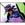

|

Michael The-Zorch Haney
Author of 16 Stories |
**********
UPON ETHEREAL WINGS By Michael "TheZorch" Haney
**********
[ ] = Telepathic communication. " " = Spoken communication.
**********
Chapter Four
For the next few days since the Darkling attack Ranma remained immensely protective over Akane. She was finding it a little irritating after a while, she was able to take care of herself after all. Of course, she knew that Ranma was just a little jealous of her abilities just as he had been jealous of her super strength after accidentally eating Happosai's Super Soba. This was something he knew he could do little about, you had to be born with these abilities, and he did not have them. It made him feel more than just a little left out of things knowing this, and he hated how helpless he felt when facing that monster and was unable to fight it.
The training was stepped up, not only Akane's martial arts under Ranma but the use of her new powers under the Amazon Lady Ambrosia. It disturbed Akane somewhat at how exhausted she felt following the battle. She had exerted herself very little during the fight, so could using her powers have drained her so much?
"Actually, I am surprised you stayed awake as long as you did following the battle." said Lady Ambrosia. The three, Ranma, Akane, and the ancient Weaver sat in the dojo.
"Ranma, you noticed something about Akane the day after the fight, tell us what you noticed." she said turning to the pig tailed martial artist.
"I noticed her chi was really low." he said.
"Precisely, although manipulating the deuteriums is not a chi technique, it can drain you of your chi." Lady Ambrosia explained. "Can you tell me what chi is, Ranma?"
"Your essence, your life force." he answered.
"Correct, which means that your chi levels must be brought up Akane if you are to progress in your training, and this is where Ranma can help in this respect." the ancient Weaver explained.
"I-I can?" Ranma pointed at himself.
"Of course, you were trained to bolster your chi and focus it." Lady Ambrosia replied. "This sort of training will be vital for Akane to move to the next level in her training."
"Learning how to do that ain't easy." said Ranma. "I learned from Pop, but I don't think Akane'll appreciate the way he teaches." Akane suppressed a shudder.
"Then teach her the way you think it 'should have' been taught." Lady Ambrosia suggested.
"Breakfast is ready!" Kasumi called the house.
Ranma's stomach promptly growled. "I think we'll resume this after school today." the ancient Amazon said smiling at Ranma who blushed furiously.
*****
Ikari Masuka smiled with satisfaction as she counted the huge wad of Yen in her hand. Her friend's sister, the hacker, came through in record time delivering the information she needed in less then a day. Turns out the girl had hacked into the local municipals database before. The information far more profitable than she could have imagined. Oh how she wished she could see the look on Nabiki's face when she found out about this. There was going to be a new shark loose in the halls of Furinken High School now. With a happy smile she walked down the hallway towards the entrance to change out of her indoor shoes. Masuka came up short when Nabiki stepped out from around the corner of one of the rows of shoe lockers.
There was a look of genuine anger on Nabiki's face. "Well, well, if it isn't the former big shot of Furinken High." said Masuka.
To her sudden surprise Nabiki's hand came up and soundly slapped her across the face. "You bitch!" she spat.
"I see you heard, pretty ingenious of me don't you think?" Masuka grinned as she rubbed her cheek.
"You aren't a big shot, you're just a wannabe." Nabiki told her with contempt in her voice. "You have no idea how much damage your little stunt today is going to cause."
"What, the little tid bit that Ranma and your little sis have been married for almost a month and a half?" Masuka flashed a "I got you now" sort of grin.
"Yes that, do you know how many guys in this school obsess over Akane, not to mention Kuno baby?" Nabiki asked her. "I'm not worried about the regular boys, Ranma and Akane can handle them, but Kuno baby will be a terror now."
"I could spread the news around the it was a clerical error downtown, if I was properly motivated." said Masuka. She cringed when Nabiki grabbed her by the front of her schoolgirl's uniform.
"You're forgetting who you're talking to." she said menacingly. "I perfected the art of blackmail and you're butchering it."
"Kuno baby is absolutely obsessed with my little sister, it used to be amusing but that was before she and Ranma decided they really did love each other." said Nabiki. "He's delusional, out of touch with reality and has an insane hatred for Ranma, he thinks Ranma is some evil sorcerer forcing himself on Akane, and even thinks his 'pig tailed girl' is a separate person. He can't even get it into his head that she and he are the same person though he's seen other people with Josenkyo curses change before. His sister is even worse, she's obsessed with Ranma and has tried using homemade drugs derived from her black roses to get her hands on him. The two of them are deranged and fueled with the information you've so graciously provided half the student body with today they'll be even more dangerous. Not only has your stupid little quest to best me put my brother- in-law in danger, but my little sister too."
"Everyone in school knows that Ranma can handle Kuno." Masuka laughed.
"That was Kuno when he was just angry, now he's likely to be furious, and as unstable as Kuno baby is I can just imagine what he might be planning." said Nabiki.
Nabiki gave Masuka a stare that was full of ice and undisguised loathing. "If this stupid stunt of yours hurts either one of them, I'll destroy you." she said. "You think you're smart, you think you can out do me, I've been at this sort of thing years before you even thought of trying your hand at it. I could crush you, demoralized you, humiliate you like you've never been humiliated before. You want a war, well sister you got a war." With that Nabiki turned and stalked off leaving Masuka feeling as if she's somehow bitten off more than she could chew.
*****
Two certain people had not received news about the leaked information. They were far too busy enjoying each other's company as they walked home from Furinken High. They walked together, Akane hanging on Ranma's arm, after making sure nobody they knew were around to see them. All they needed was for the news to get out and all hell would break loose. It was not that they could not handle it if that happened but it would certainly complicate their lives considerably. Things were already complicated with the revelation that a war was coming, and Ranma felt a little helpless for he knew there was nothing he could do to help Akane when it came.
Akane tried not to think about that right now. She concentrated on her training, which under Lady Ambrosia was intensifying. As promised, she kept the secret that her sensei was an older Shampoo and that she was over five thousand years old. How could that have been? Lady Ambrosia was being tight lipped about most of the other details. Akane was certain that she would tell her when the time was right.
"Ranma? Akane? The word around school is true isn't it!" came a shout from behind. The two suddenly jumped apart from one another and turned around. Yuka and Sayuri stared back at them with stunned looks on their faces.
"What word, I didn't hear any rumors about me and Ranma" said Akane, feigning indifference.
"You guys 'are' married." Sayuri said.
The two in front of them looked at them with shocked expressions. "Akane, don't tell me your dad finally pressured you into it!" Yuka exclaimed.
"Where did you hear it from?" Akane asked after calming down. Well, it was only a matter of time this happened., she told herself.
"Its all over school, I'm surprised neither of you found out." Sayuri said. "Ikari Masuka was selling the info at lunch time in the cafeteria."
"Masuka? Isn't she that girl trying to muscle in on Nabiki's business?" Ranma asked, his voice betraying immense nervousness.
"Kuno didn't find out did he?" Akane asked. It was too much to hope for, and she knew it.
"You mean you didn't hear him scream?" Yuka looked at her in surprise.
The couple shook their heads. Were they both so concerned about what was going on with the training and everything that they almost tuned the rest of the world out completely. "He ran out of the cafeteria and nobody has seen him all day." Sayuri told them.
That's not a good sign., thought Ranma. "Well, I guess the c-c-c- news is out of the bag." he said, and could not quite bring himself to say the "C" word.
"So, how did you get roped into it, Akane?" Yuka asked her.
Akane smiled and replied, "Ranma asked me to marry him actually." Both girls looked at her with shock then looked at Ranma.
"I knew it!" Yuka cried. "The rumors were true, you guys really are in love! That's so romantic!"
"I figured it would help stop all the craziness going on around us at home with my pop and her dad pushing us to get together all the time." Ranma explained. "Kinda be'in in love with her and stuff helped too."
Akane blushed intensely but smiled. "So all those times you two were arguing and everything, you really were in love but just wouldn't admit it." said Yuka.
"Something like that." said Akane as she looked down at her feet feeling a little more than embarrassed.
Their attention was suddenly shifted down the street as Daiske came running around the corner. "Ranma! Ranma!" he shouted.
"What's up?" Ranma asked him.
"K-K-Kuno!" the teen gasped catching his breath. "Co-co-coming this way!"
"Oh wonderful." Ranma groaned.
"SAOTOME!" came a cry from somewhere down the street. "WHERE ARE YOU SAOTOME? YOU HAVE RUJN FROM THE VENGENCE OF HEAVEN FOR THE LAST TIME!"
"He sounds really mad." said Yuka.
"You think!" Daiske exclaimed. "The freak has a 'real' sword this time!"
"Ranma?" Akane turned to her husband.
"I can take him, this is my fight." he said, his face set with a mask of determination. "This ends now. Your my wife, and he nor anybody else has the right to say otherwise."
"Oh how romantic, I wish I had a guy to fight over me." Sayuri swooned.
"You sure?" Akane asked Ranma.
"I don't need no special powers to take on that baka." he said.
"Huh?" the three teens looked at him questioningly as Akane blushed furiously.
"SAOTOME RANMA! PREPARE TO MEET THY FINAL END!" the bokken wielding samurai wannabe snarled as he rounded the corner. He had an insane evil gleam in his eye and held a finely crafted and very "real" katana blade in his hands.
"RETURN TO THE HELL FROM WENCE YOU CAME!" Kuno screamed as he lunged at Ranma. The two girls screamed as they leapt out of his way and Akane tackled Daiske to keep him from being cleaved in half.
"Kuno, are you nuts you could have hurt them!" Ranma yelled at him after executing a flip that ended with him standing on the fence that ran along the drainage canal.
"Casualties of war, Saotome." Kuno said, his voice filled with malice. "It is plain to me now that they are in league with you, and thus your enchantments have poisoned their minds. The released for them is your death, or their own."
Oh man, he's really gone off the deep end now., Ranma thought to himself. "Akane, get them outta here, I'll take care of this. Once and for all." Akane nodded and ushered the other teens away who gave no protest.
"Akane is mine, you never had a claim to her Kuno." Ranma said defiantly. "She hates your guts, she never wanted to go out with you, it was just a figment of your twisted little mind. You have no right to choose who she can and cannot fall in love with."
"SILENCE DEMON!" Kuno cried and sliced into the fence with the sword. Ranma went airborne over Kuno's head, flipped twice, then landed lightly in a ready fighting stance.
"Its over, she's my wife, and I ain't let'n nobody take her away from me." he said. "Especially somebody as pathetic as you."
Kuno whirled around on him at a blinding speed and Ranma just leaped over the sword as the blade sang through the air where he had been standing. "THEN LET THIS BE OUR FINAL BATTLE!" Kuno cried. Still in the air from his leap, Ranma lashed out with his foot catching Kuno's head and sending him flying backwards. The boy got back to his feet with a shoe imprint plastered on his face.
Man, he's so out of it he barely felt that kick!, Ranma realized in horror. Time to get serious! Ranma exchanged blows with the boy a few times more but nothing seemed to stop him. Thankfully Ranma's superior speed helped him avoid Kuno's katana blade with relative ease. Moving as if by instinct Ranma raised his hands, focusing his chi...
"Moko-"
"I DON'T THINK SO!" came a shout from the side and Ranma's arms were suddenly wrapped in chains and they were quickly pinned against his body.
"MOUSSE!" Ranma shouted in surprise.
"Long time no see Saotome." the Chinese Amazon boy smirked. "I've been waiting for a day like this. You got a lot to answer for."
Oh great, now I got duck-boy to deal with too., Ranma groaned. "I thought Cologne dragged your feathery ass back to China." he said.
"Because of you I can't ever marry my sweet Shampoo, she's dead to the tribe and can never come back to China!" Mousse growled angrily. "My life is ruined because of you, now I'm being forced to marry that bitch Perfume and its all your fault!"
"It would seem that we both have a similar cause." Kuno said looking up at the myopic martial artist. "May I propose an alliance."
"An alliance to rid the world of Saotome Ranma, count me in." Mousse replied with a wicked grin and drew a nasty looking dagger out of his sleeve.
"Oh give me a break!" Ranma groaned rolling his eyes. As the two came near he quickly bend at the waist resting his head on the ground, then started spinning like a break dancer on the top of his head with his legs flailing out to the sides. Kuno and Mousse were pummeled furiously before being thrown backwards. After coming to a dizzy stop, Ranma leapt back to his feet. A few flexes of his muscles in the right places and the chains around his arms and torso fell away.
"You two are so pathetic its painful." he said shaking his head. His danger sense suddenly flared and by pure instinct born from twelve years of intensive training he leaned to the side. A large bamboo umbrella whistled past and slammed into the ground creating a small crater.
"Ranma prepare to die!" came Ryoga's challenge as he leapt towards him, his fist leading the way.
First the fruit cake, then the duck, and now the pig, man am I getting hungry!, Ranma said to himself. He dodged Ryoga's concrete shattering punch, swung around, and delivered a swift kick to the back of his head sending the rampaging teen to the ground face first.
"Hey P-Chan, what has it been, six, seven months?" Ranma smiled imperiously. "Better not let Akane know you're in town, if you know what I mean."
"Because of you Saotome the woman I love hates me, you're gonna pay!" Ryoga shouted as he picked himself up off of the ground. Kuno and Mouse both recovered at about the same time and started advancing upon their prey.
"Saotome, this travesty of justice will not continue." the insane kendoist raved. "You're unholy marriage to the beauteous Tendo Akane is an abomination unto heaven itself!"
"M-M-Marriage?" Ryoga stammered, his face in shock.
"Yeah, we tied the knot a few weeks ago." Ranma told him casually. "We woulda sent ya an invitation but knowing your lousy sense of direction we'd be back from our honeymoon by the time you showed up."
A look came to Ryoga's eyes at that moment as he turned them towards Ranma. They were the eyes of a man who was about to commit murder. "Y-You married Akane!" Ryoga shouted. "You forced her into it, didn't you!" He pointed an accusing finger in Ranma's face.
"I love her, I can admit it now, I ain't afraid to say it no more." Ranma explained. "And she loves me."
"LIES!" Kuno screamed and Ranma barely dodged his sword swing.
"So you two wanna kill him too, I can live with that." Ryoga said as he pulled his umbrella out of the ground.
"Where do you think we should bury him?" Mousse asked.
"A cur of his status deserves not to be placed in hallowed earth." Kuno snarled.
"We throw him in a ditch then." Ryoga said and other two nodded.
I don't believe this, they really want to kill me, for real!, Ranma shouted in his mind. "GET HIM!" Ryoga cried and the three charged. Ranma turned and leapt into the air to a nearby rooftop as a dozen shuriken from Mousse struck the wall. The three insane martial artists were on him in seconds swinging sword, umbrella, and a yo-yo with spikes. They came down into the middle of the next street and Ranma went on the offensive. He leapt in between the three lashing out with his legs pegging Mousse and Ryoga hard before delivering a drop kick to the kendoist. They recovered quickly and began to attack again putting Ranma on the defensive. He knew there was going to be only one way to get all of them at the same time. Trying not to look like he was not trying to lead them into it, he began to move in the spiral leading them towards the center and exuding cold chi as his mind shifted into the Soul of Ice.
"SASUKE! NOW!" Kuno shouted out and Ranma suddenly felt something on the back of his neck that felt like a mosquito bite. He reached up and felt something. Ranma looked at it in his hand he realized it was some sort of blow dart.
"HA HA HA! We have you now Saotome Ranma!" the little ninja cheered as he leapt out of a nearby tree.
"Good shot Sasuke!" Kuno shouted in praise.
Ranma grabbed the little man by the front of his tunic and snarled, "What the hell did you shoot me with?"
Sasuke held up the blow gun in his hand and replied, "Its an ancient secret recipe passed down throughout the generations from father to son in my clan. I hope you enjoy it Saotome because we will certainly enjoy what it does to you. Ha ha!" Ranma indeed began to feel something. His arms and legs began to get heavy, it was getting harder and harder for him to move.
"Remind me to increase your food rations for this week, Sasuke." Kuno said with a smile.
"Of course, Master Kuno." the little ninja bowed.
Ranma found it nearly impossible to stand and fell back on his haunches. Try as he might he could not get his legs to respond like they should. "What have you done to me?" he demanded. I can hardly move., he thought to himself.
"Its a fast acting paralysis potion, far more effect than anything Mistress Kodachi ever brews herself." Sasuke grinned at him.
"You mean he can't fight back?" Mousse asked.
"Oh, it lasts several hours." Sasuke told him. "It also paralyzes the vocal cords, so soon he won't even be able to scream."
Ryoga cracked his knuckles, "Lets get this over with."
"WAIT, lets talk this out guy." Ranma said with a friendly smile but was belted into the air by Ryoga's punch. He tried to cry out as he flew through the air and crashed into the roof of another building. Pipes around him ruptured and Ranma was drenched in cold water instantly triggering the change.
"He went this way, see, I bet he landed over there!" she heard Mousse's voice from outside.
Ranma struggled to move her legs and arms, and just managed to get into her hands and knees. Slowly she began to crawl out of the wreckage but it was a struggle with how her limbs felt so heavy. As she was nearing the street she felt strong arms lift her gently into the air.
"Oh my dear pig tailed girl, how I've missed you so!" Kuno waled as she glomped her tightly. "No doubt the vile Saotome is to blame for your ragged appearance."
"No, you and those two losers were trying to kill me." Ranma tried to say but Kuno was squeezing her too tight. That and it was getting hard to speak due to the paralysis potion.
"Fear not my beloved, I shall bestow upon you my loving kiss and all shall be right with the world again." said Kuno and he shifted her in his arms so he could lean down towards her.
Oh shit NO!, Ranma's thoughts screamed. She tried desperately to struggle out of his grip, but Ranma found she could not move anymore. The boy's face loomed over hers for a moment before plunging downward. Ranma's mind exploded as their lips met, he tried with all of his might with all the rage in his heart to fight back but he just could not move at all.
"Oh my beloved pig tailed girl, I shall free you once and for all from the vile enchantment of that wicked sorcerer Saotome." Kuno said after breaking the kiss. He lifted her into his arms and ran down the street. Elsewhere in the area, Mousse and Ryoga tried to find their way over to the demolished building where Ranma landed and were obviously getting nowhere. Kuno did not go far, he leapt with Ranma into a group of bushes and laid her on the ground.
"This is not exactly a suitable place for us to consummate our love, my sweet, but time is of the essence." the boy said as he began to pull off his shirt. With his chest bare he began to work at the wooden fasteners on Ranma's Chinese style shirt.
Oh shit, oh shit, oh shit, oh shit, he gonna rape me!, Ranma's mind screamed. The paralysis was now effecting her vocal cords so she could not even speak anymore, she could not scream. Kuno suppressed a nosebleed as he folded open the front of Ranma's shirt baring her well formed breasts. He took one into his hand giving it an appreciative squeeze and leaned down and took the other into his mouth.
THIS CAN'T BE HAPPENING, THIS CAN'T BE HAPPENING, OH KAMI-SAMA SOMEBODY STOP HIM, PLEASE!, Ranma's thoughts cried out desperately, but nobody could hear. Kuno moved to the other breast and began to reach his hand down into the red head's pants. Ranma screamed silently inside her own mind when she felt Kuno's hard erection brush up against her leg. She struggled to move as she felt fingers begin to probe her in a soft warm, wet place down between her legs. Ranma felt hopelessness like she had never felt before, hopelessness and maddening rage that was unlike anything she had ever experienced. As a finger plunged down inside the warm, wet flesh of her nether region something happened. Ranma felt as if the paralysis potion had suddenly worn off, and felt a flash of exhilarating strength suddenly hit her with the force of a freight train. The feeling of being fingered in her loins by Kuno was forgotten, Ranma discovered to her surprise that she could move. That was not all, she could feel things she never felt before. She could feel the molecules of the fabric Kuno's samurai outfit was made of, she could discern the different molecules of the air that flowed around her.
Kuno's eyes went wide as he tried to pull down his pig tailed girl's pants and felt two hands encircle his own. They were the soft, supple hands of his love, perhaps she was trying to help him disrobe her, but though soft as they were they felt like steel bands. Ranma wrenched Kuno's hands away from her body and gave the barest of twists. She smiled as she heard the sound of bone cracking, and Kuno let out a loud scream of pain. The sound drew the attention of the other two, and Mousse soon arrived with Ryoga in tow. They looked at the scene in horror as Kuno lay on top of a hand naked Ranma-chan, and she had just broken both of his arms.
"Don't you dare ever touch me again you-you-you HENTAI!" Ranma screamed and a shock wave of air threw Kuno into the air and knocked Mousse and Ryoga off their feet with the force of a miniature nuclear explosion.
Elsewhere in Nerima, Akane jerked around towards the direction of a sudden surge of power in the distance. It felt familiar to her somehow, she reached out with her mind and touched that power. An image of an enraged Ranma-chan popped into her mind.
"Ranma?" she said in surprise.
"Well, well, isn't this interesting." came Lady Ambrosia's voice to her right. Akane turned to her in surprise and noticed the slight telltale distortion in the air caused by folding space.
"Ranma's in trouble." said Akane but the Weaver put up her hand to stop her.
"He 'was' in trouble, but no longer child." the old woman smiled. "It appears I now have two apprentice Weavers."
Mousse and Ryoga struggled to their feet and looked up at a sight that filled them with horror. Ranma stood in the center of a blasted out crater, Kuno's body flew through the air and repeatedly slammed into a brick wall over and over again. The kendoist soon tumbled to the ground covered in bleeding wounds, then the red head turned her eyes towards the others. What they saw in those eyes terrified both of them. Mousse screamed in terror and lashed out with his hooked chains, but to his horror they suddenly began to glow red, then yellow, and fell to the ground as a molten pool of slag. Ryoga reared back his arm to throw his umbrella but his arm was caught by something hard and rough. He look down in horror as he watched hundreds of tree roots shoots out of the ground around his feet and ensnare him. He tried to move, but the roots held him fast. Mousse saw all this happen and turned to run just as a water hose nearby came to life and sprayed him. The duck quacked in dismay as a rot iron fence nearby dismantled itself and came together forming a cage around him. The joints where the metal touched glowed red for a moment and melted together, then grew cool. Sasuke, watching all of his from the sidelines turned and ran for his life with a look of wild terror on his face.
He never looked back, for if he did he would have seen Ranma stagger forward one step then collapse to the ground.
*****
"Ranma?"
"Hmmm?"
"Ranma, wake up."
"Huh?" Ranma opened his eyes and sat up. The first thing he realized was that he was male, and that he was in his and Akane's bedroom.
"Are-are you alright?" Akane asked. She was sitting on the bed, a bowl of warm water in her lap and a wet wash cloth in her hand.
"What happened?" asked Ranma.
"You fought Kuno, Ryoga, and Mousse. Remember?" she said.
Ranma seemed to strain to remember for a moment, then a few stray memories flashed before him and he shuddered in revolution. "I got splashed, Sasuke paralyzed me, and Kuno he-he-he..."
"I know, Ryoga and Mousse told me everything." said Akane, there was no disguising the tone of contempt in her voice when she said the lost boy's name. "I knew Kuno was obsessed, but I never imagined he'd try to commit rape." The idea was all the more horrifying for Akane when she realized that it could have easily had been her.
"Where are Mousse and Ryoga?" Ranma asked her.
"Shampoo is holding them both at bonbori point down in the dojo." she said with a smile. "When Mousse saw Lady Ambrosia he knew he was in serious trouble and gave up without a fight."
"Kuno, where is he?" he asked her.
"When me and sensei arrived he was half dead." she told him. "Lady Ambrosia was able to heal his wounds. Sasuke came back and carried him home."
Ranma shuddered and drew his knees up to his chin. "That bastard, he-he-he kissed me, then he started undressing me." he stammered. "He-He-He started sucking on my breasts, then-then-then he reached into my pants-"
"Oh Ranma, its alright, its over, he can't hurt you anymore." Akane said soothingly as she wrapped her arms around him.
"If he ever touches me again I'll kill him!" Ranma snarled in rage.
"Sssshhh! Ranma, you and I know you could never kill someone like that, a monster maybe, but not a regular person." said Akane. "Its just not in you."
"I just feel so-"
"Violated?" said Akane. "A lot of girls who were raped or nearly raped feel the same way."
"But I ain't a girl!" Ranma shouted.
"Hai, I know, but you still have me and a family that loves you to help you." Akane told him as she began to rock him from side to side. "I hate what he did to you, I knew I should have stuck with you."
"I'll be alright, I can get over this." Ranma said, his hands snaked around Akane's waist. She stopped rocking him then looked at him with a curious expression on her face when she felt a pair of hands slowly undo the tie that held her school uniform together in the back. "With a little help." he added smiling sheepishly as Akane's dress began to fall away from her shoulders.
"Hentai." she said softly as that same pair of hands unhooked the clasp on her bra. Ranma said nothing, he just grinned as they slowly laid back on the bed. An hour later Akane lay on his chest, her legs still quivering from several intense orgasms.
"Do you feel better now?" she asked him.
Ranma shifted around putting her beneath him again. Akane's eyes went wide with surprise. "Maybe I need a little more help." he said. She gripped his shoulders tightly and gasped as they renewed their lovemaking for a second time that day. Two hours later Akane collapsed onto Ranma's chest gasping for breath, she did not have the strength to continue even though hopping up and down on top of his manhood felt to incredible.
"I think I feel better now." smiled Ranma.
"Good because I'm exhaustedly." she said. "And sore."
"I didn't hear ya complaining none." Ranma gave her his best Cheshire cat grin.
"Oh you!" she laughed and slapped him playfully on the chest. This prompted a short make-out session before the two finally climbed out of bed, dressed, and headed down to the dojo. Shampoo gave Akane a sheepish grin when the two entered the dojo, her keen hearing easily picked up Akane's screams from the house. Mousse and Ryoga sat in the middle of the floor unmoving. Shampoo looked back at them with a scowl on her face. In both hands she still held her bonbori. Akane noticed for the first time that Nabiki was standing next to the former Amazon.
"About time you two got done conceiving my niece or nephew to come down here." the middle sister said with a mischievous smirk. Akane smiled and look down at the floor blushing from head to toe.
Ranma and Akane were making love?, Ryoga realized in horror as he looked up at the couple. A renewed rage came to him and he started to get back up. WHAM! A bonbori mace was embedded in his head knocking him out cold.
"Shampoo no say stupid pig boy could stand!" his jailer snarled angrily.
Akane stalked up to the lost boy, the faint outline of a mallet began to appear in her clenched fist. "First you betray my trust by posing as my pet pig, and now you tried to help Mousse and Kuno kill Ranma." she said angrily. "Do you have any morals at all?"
"Akane I-I-"
"You love me, is that what you were going to say." she spat. "All the fights between you two had been over me, the attack at the school when you first showed up was because of the curse, and not because of some Bread Feud or Ranma running out on a fight with you. All the times Ranma fought with P-Chan-I-I can't believe how blind to the truth I was all that time."
"It was all his fault!" Ryoga shouted.
Akane poked a finger at him and jabbed him in the forehead. "Maybe up here in your so call brain it was." she snapped. "All the time we ever talked it was Ranma did this and Ranma did that, like everything in your life was his fault. Now you go and do this. It took almost loosing Ranma to make me realize what I had. I still get mad at him sometimes, but I think back to how my life was before he came. I don't want to live like that again."
"Ryoga's sense of logic is rather limited; number one, everything is Ranma's fault, number two, if something goes wrong in his life when Ranma is around refer to rule number one, number three, if something goes wrong in his life and Ranma isn't around refer back to rule number one." said Nabiki with a laugh. Shampoo looked at her a moment with a stunned expression then started to giggle.
"Do you have anything to say for yourself?" Akane asked Ryoga, her hands on her hips.
"I-I-" he tried to say. Oh Akane, don't look at he with such hate in your eyes., he pleaded in his thoughts.
"You can't even apologize." she said with a sad sigh. "That is really sad, because before today I was going to consider giving you a second chance to be our friend, but I guess this just proves to me you can't be trusted." With that said she just turned away from him and walked over to Ranma and put her arm around his waist.
"As for you, what should we do with you?" Ranma turned to Mousse.
"Make Peking Duck dinner, is too too delicious." Shampoo laughed. Mousse winced and said nothing. Nabiki tried very hard to keep from laughing, and did not do a very good job.
"He said he was be'n force to marry somebody name Perfume." Ranma said to Shampoo.
Shampoo shook her head, "Poor Perfume, she nice Amazon sister to Shampoo."
"It was all the old ghoul's idea." Mousse said, speaking up for the first time.
"If I were Perfume I would be hitting Cologne over the head for suggesting the marriage." came a voice from the dojo entrance. Everyone looked to see Lady Ambrosia enter carrying a tray with several tea cups. A look of terror came to Mousse's face and he turned his head to look down at the ground.
"What is wrong, cousin of mine?" she asked the boy. "Can't look me in the eye."
"Cousin?" Akane, Ranma and Nabiki all said at once.
"Third cousin actually, he's related to one of my daughters from my third marriage." Lady Ambrosia explained. Everyone looked at her with surprise and she said, "When you live as long as we Amazon Weavers live you have two or three relationships over the centuries."
"O-Kay." said Nabiki slowly.
"R-R-Ranma is a Weaver?" Mousse said looking up at her. "Its the only way to explained how he did what he did."
"What's a Weaver?" Ryoga asked him.
"Weavers sow the threads of all that is and all that will be, they are the hands of the Kami." said Mousse, reciting an ancient Amazon poem he learned as a child.
"Ranma does have the Gift, yes." Lady Ambrosia told him. "But, it is Akane who shows the greatest strength. Though Ranma's Gift is not as pronounced as Akane's he makes up for it with his fighting prowess, which combined with the Weaving will make him more powerful than any martial artist who has ever lived or probably will ever live."
"No way." Ryoga gasped, his voice almost a whisper.
"Nobody in their right mind 'ever' challenges a Weaver, most aren't martial artists, but they don't have to be." Mousse explained. "They can kill just by thinking about it."
"We prefer not to use our powers that way, it takes a great deal of responsibility to wield the kind of power we possess." Lady Ambrosia replied. "The two of you are lucky to walk away from this experience in one piece. That Kuno boy was a real mess though, if Akane and I had been late by one minute more he would be dead right now." The two on the floor looked at her in shock then fearfully turned their expressions toward Ranma.
"What we do with them?" Shampoo asked.
"Let them go, its over." said Ranma.
"But they tried to kill you!" Akane exclaimed.
"That ain't really nothing new for them, besides there ain't nothing they can do to us anymore anyway." he replied.
"You hear big brother Ranma, you go and not come back or Shampoo make you suffer." the young ex-Amazon said, lowered her bonbori, and opened the nearest door to the dojo. The two boys slowly walked through the doorway and looked back. They were greeted by several angry, unfriendly face. With a sigh of resignation, or final defeat, the two leapt over the wall of the Tendo compound and vanished into the night.
*****
The next morning Saotome Genma dragged his furry behind out of the pool after being thrown there by his son during their early morning training session. He waddled on his mind paws to the bath, into the wash room, and slid open the door to the bathroom. A blast of steam hit him in the face and when the clouds cleared his eyes went wide at what he saw and heard. Ranma-chan lay on the floor of the bathroom, naked, thrashing around lightly. Another figure, obviously Akane was on her knees, her head was nestle down between Ranma's- "Oooo, you're so right it feels soooo good." the red head moaned, then she looked up.
"DO YOU MIND!" Ranma-chan cried. Akane shot up from her "position" with a blush on her face that ran from the shoulders up and was almost so bright she was literally glowing. The panda growled something and was about to bring up his ever-present sign when a fist hit him in the head knocking him backwards and out the doorway.
"Geeze, can't a married couple have some privacy!" Ranma-chan growled as she closed the door.
The panda held up his sign that read, "Ok, I'm freaked out now."
*****
The couple found the atmosphere at Furinken High School to be a little tense. Students had gathered around the gates and they whispered to one another as te two walked into campus arm in arm. The news obviously spread through the whole school by now, so there was no reason to hide it anymore. Akane was relieved to find Kuno was nowhere to be seen. However, her happy thoughts of having an uneventful day were suddenly shattered when Yuka and Sayuri came running up to them in obvious distress.
"Akane! Ranma! Some of the boys have gotten together, they're going to try and beat up Ranma!" Yuka cried. Behind them Akane could see a group of boys walking towards them, some carrying pipes, bokken, golf clubs, and baseball bats.
"Uh oh." she said.
"Let me do this, I need the practice." said Ranma.
"Don't hurt them too bad, they can't take too much of a beating like Ryoga can." Akane laughed. Yuka and Sayuri looked at them and could not believe how casual they were being, half the jocks at Furinken were out for blood against Ranma and they were acting like it was no big deal at all. Hiroshi and Daiske came running up to see what was happening in time to see Ranma talk between Yuka and Sayuri and face the oncoming wall of angry teenagers.
"We gotta beef with you Saotome!" one of them yelled.
"Yeah, you took Akane away form us!" another shouted.
"And you got them other girls too!" yet another shouted.
"First of all, Akane is my wife now, and I ain't involved with nobody else, and I ain't engaged to nobody else." Ranma told them.
"You're lying, you got that Shampoo as your mistress!" the first boy replied.
"You even got her livin under the same roof!" another boy accused.
A few of the girls standing around started looking towards Ranma with expressions of contempt. Akane noticed quite a few looks of sympathy directed her way from the girls in her class. She decided to step in, she had to defend her husband.
"Where the hell did you hear that from?" Akane demanded.
"Its all over school, everybody knows!" one of the boys yelled.
Across the schoolyard, just close enough so they could hear what was being said. "Three guesses who spread that rumor boss." one of Nabiki's cohorts whispered.
"First it was a war just between us, now its personal, that girl just dug her own grave." Nabiki said with a frown.
"Shampoo can't be Ranma's mistress because she was adopted Ranma's family." Akane explained. "They're brother and sister now." That caused looks of absolute surprise from everyone within earshot.
"What about Kuonji Ukyo!" a boy demanded.
"She's an old friend, I was engaged to her by my dad but he stole her dowry." Ranma explained. "I didn't even know she was a girl until not long ago. Besides, I love her as a friend, not the way I love Akane." To exemplify this he put his arm around his wife's waist.
"We don't believe you, GET HIM!" another shouted and all hell broke loose. The schoolyard became a huge brawl as the boys surged towards Ranma and Akane. Another group of students who held an unspoken support for the couple surged forward to meet them. Fist flew, teeth were knocked out, sweat, blood, and spittle threw in all directions.
A piercing cry shouted over the din of the roaring battle, "Happo Ho Five Yen Shiatsu!" A bright blast of light cut a swath through the throng of students and all those in its way collapsed instantly.
"Stop this fighting at once you delinquents!" a voluptuous Miss. Hinako demanded. Seeing as how she was being ignored she pointed her hands at another group of fighting students and cried, "Happo Ho No Yen Coin Return!" The blast knocked dozens off their feet and sent a few flying into the air.
Ranma and Akane fought back to back using their ordinary martial arts skills instead of their Weaving abilities. The students they faced had little or no fighting skill at all, so taking them down was all too easy for the two heirs of the Anything Goes School of Martial Arts. The fight intensified as Miss. Hinako tore into another group of students, and it seemed as if the whole school was now involved in the battle. Akane realized many people could get seriously hurt if it was allowed to continue so she reached within herself and called upon her hidden abilities. The battle suddenly stopped, punches stood still as if he hands of time had been stopped, and in a sense they had been. Akane touched Ranma's arm and he suddenly became alert, his opponent frozen in place.
"We've got to stop this Ranma." she said to him.
"How do ya suggest we do that?" he asked. "This has gotten really ugly. Uh, exactly what did you do anyway?"
"I really wasn't expecting a reaction to us being married to be like this." she admitted. "I froze a pocket of time, just around the schoolyard actually. Any ideas? You're good at thinking on your feet."
"I got one, start time again." he told her. Akane concentrated for a second and the battle was once again in full swing. Ranma leapt up into the air, focused his thoughts on the new source of power he had within himself, and came down delivering a mighty downward punch to the earth. The ground rippled outward like the waves on a pond from the impact knocking Akane onto her rear end and throwing everyone else around them completely off their feet. A sound like the roar of thunder freight trained through the schoolyard and all the windows of the school building shattered as the building shuddered on its foundations. Miles away, an earthquake seismic detector registered a quake in Furinken at six on the Rictor scale.
"Wow." Akane said when it was all over and the students began to slowly climb to their feet, the fight forgotten.
Later that day Ranma and Akane collapsed at the dinning table. Two full cups of tea and a plate of fresh baked cookies sat waiting for them. They both felt physically and emotionally drained from the events of the past few days. Lady Ambrosia came out of the kitchen in one of Kasumi's aprons and sat down across from them.
"I take it today was, interesting." she said.
"You have no idea." said Ranma.
"I got hammered by the girls all day with questions." Akane explained. "I'm just glad I didn't run into Ukyo at all today. She disappeared after the fight this morning."
"Oh man, what if Ucchan hear us this morning?" Ranma asked her.
Akane shrugged, "She probably already knows, and if not she's sure to know now. I'm not really worried about her as a threat though, I'm more worried about Kodachi." Ranma let out a groan at the mention of the Kuno girl's name.
"Well, it was bound to get out about you two." said the Amazon Weaver. "For now we must concentrate on bolstering Akane's chi levels and improve Ranma's control over his abilities."
"How can we tell who is stronger?" asked Ranma.
"Well, as I said the stronger the Weaver the wider their area of effect is." Lady Ambrosia explained. "Akane has a very wide area of effect. She can effect an area the size of Nerima. That is based on her current skill level and chi level, which when improved will change."
"So Ranma may have a small area of effect." said Akane nodding with understanding. "But, he'll have more staying power due because his chi levels are so much higher."
"Exactly, so we will need to do the same exercises with Ranma that you and I did to determine how far out his area of effect is." Lady Ambrosia told her.
"When do we start?" asked Ranma.
The ancient Amazon looked at the two and smiled. "I think maybe tomorrow, you both look too tired to try anything today." she said.
"Good, I'm exhausted." Akane sighed with relief.
"Since there is no school tomorrow we'll start early in the morning." the old woman said, the couple in front of her groaned and wondered if she had been talking to much to a certain panda-man.
**********
Coming up in Chapter Five
Ranma has the Gift too, only not as strong as either of them, but it is there none the less. Just as the dust begins to settle after Ranma's knock-down, drag-out battle royal with Ryoga, Kuno, Mousse, and half the boys at Furinken High School a new crisis hits. Hell has no fury like a woman scorned, and Ukyo is a very scorned woman. She can't have her beloved Ranma honey, but that does not mean she can't get her satisfaction. Even if she had to take it out of Genma's hide, literally!

|
Review this Chapter |